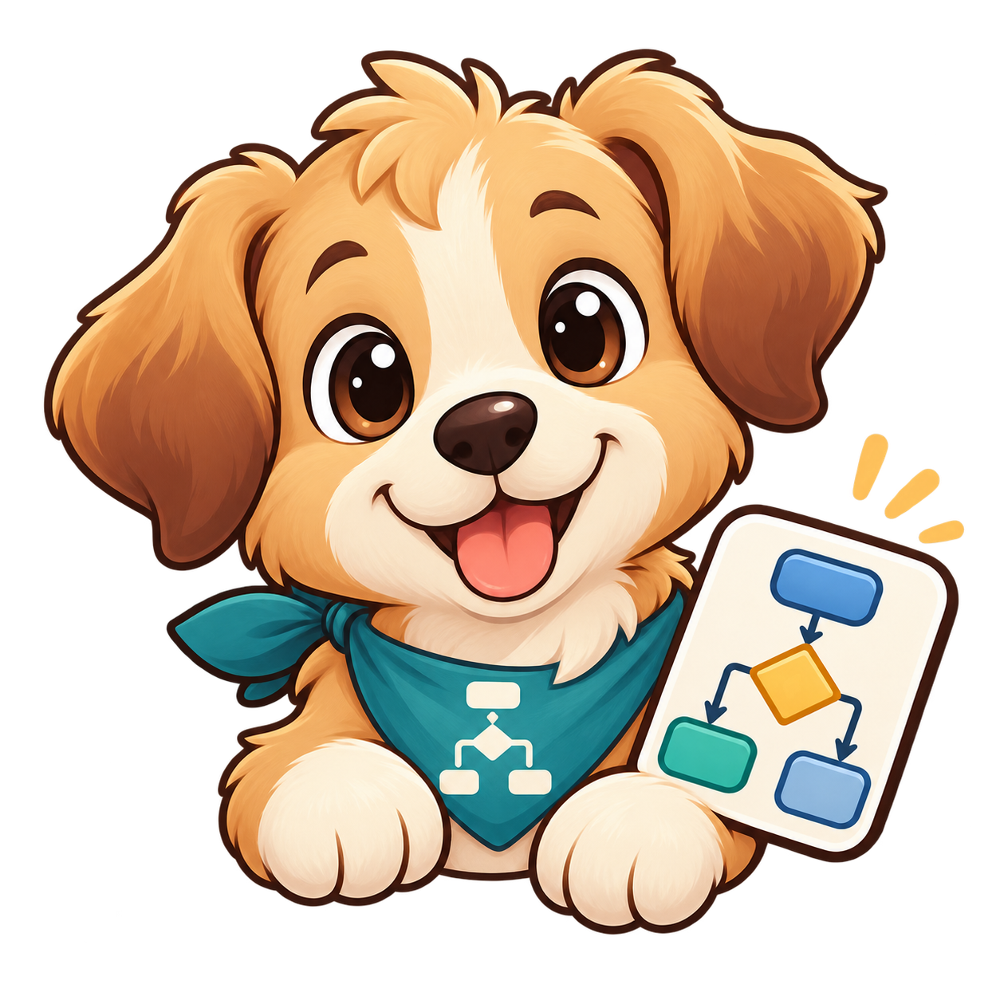

智慧流程圖產生器 V1.9.8.1
🐾 準備完成
發現上次未完成的流程
可以恢復自動儲存內容。
恢復上次內容
使用目前內容
刪除自動儲存
🐾 左側工具
全部展開
全部收合
▶
流程輸入
常用
輸入模式
智慧模式（推薦）
簡易流程模式
自然語言模式
流程排列
由上到下
由左到右
🐶 快速加入
支援判斷裡再放判斷
＋ 步驟
◇ 判斷
↳ 是／否
↩ 回到
≡ 同時進行
整理格式
輸入流程
最簡單就是一行一個步驟。複雜分支可用縮排，也支援一般中文敘述。
Tab
往下一層
Shift+Tab
回上一層
Enter
延續目前縮排
開始 進行資料審查 審查合格？ 是： 送主管審核 主管核准？ 是：執行案件 否：退回修改 回到：送主管審核 否： 通知補件 再次審查 回到：審查合格？ 結束
圖文已同步
即時理解結果
正在分析…
範例流程
審查補件／巢狀判斷
公文簽核流程
採購申請與驗收
教育訓練辦理
設備報修流程
災情通報流程
請假申請流程
案件／客服處理
平行工作範例
循環重試範例
智慧中文自然寫法
載入選擇範例
產生流程圖
清除
流程檢查
等待檢查
▶
外觀與縮放
配色／縮放
流程圖配色
圖表產生器風格
粉紅薄荷
蜜桃薰衣草
薰衣草報表
柔和報表
排版密度
智慧最佳化（推薦）
緊湊固定
標準寬度
智慧最佳化會依節點、判斷、平行與回圈複雜度自動縮排，再交由防碰撞修正。
畫面縮放
100%
▶
文字設定
字型／大小
整體文字設定
整體設定是預設值；已個別設定的節點仍可保留自己的字型與大小。也可以按「套用到全部節點」強制統一。
整體字型
微軟正黑體
新細明體
標楷體
Arial
Georgia
整體字體大小
套用到全部節點
是／否／回到 標示字型
跟隨整體字型
微軟正黑體
新細明體
標楷體
Arial
Georgia
是／否／回到 字體大小
恢復預設
▶
線條與路由
箭頭／避障
流程線條與路由
「是」固定由判斷框左側出去，「否」固定由右側出去；拖曳節點後會重新計算直角路徑，優先避開其他流程框。
箭頭線條粗細
避障安全距離
路由模式
智慧避障
簡單直角
▶
輸出與資料安全
PDF／Word／備份
PDF／Word 輸出與資料安全
輸出簡化為 PDF、Word 與 PNG。Word 版本固定以 A4 為基準，自動選擇直式或橫式；PNG 會高解析輸出並自動緊密裁切。PDF 會智慧合併尾頁，避免第二頁只剩一個節點。
A4 方向
自動判斷
A4 直式
A4 橫式
頁面模式
閱讀清晰（推薦，自動多頁）
單頁全圖（可能字較小）
頁面邊界
極窄 3 mm（推薦）
窄 6 mm
標準 10 mm
PDF 標題
標題大小
標題字型
微軟正黑體
新細明體
標楷體
Arial
Georgia
標題對齊
置中
靠左
靠右
PNG 解析度
1× 一般
2× 高解析
4× 超高解析
PDF 解析度
180 DPI 標準
240 DPI 清晰
300 DPI 超清晰（推薦）
PDF 壓縮品質
標準
高畫質
最高畫質
跨頁接續
不重疊
少量接續
較多接續
預覽分頁線
顯示
隱藏
Word 裁切邊界
更緊（推薦）
標準
保留空間
完成流程圖後會估算 PDF 文字大小。
完成流程圖後會顯示建議方向、頁數與 PDF 安全畫質。
▶
編輯與下載
復原／節點／匯出
復原
重做
自動排版
節點編輯器
PDF 輸出預覽
下載 PDF
Word 版本輸出
輸出PNG檔案
專案備份 JSON
匯入專案 JSON
Word preview
Word svg
Word png
svg
png
自動儲存：待命
流程圖預覽
等待產生流程圖
－
完整顯示
＋
100%
完整顯示
置中
PDF 輸出預覽
關閉
下載 PDF
下載 Word SVG
下載 Word PNG